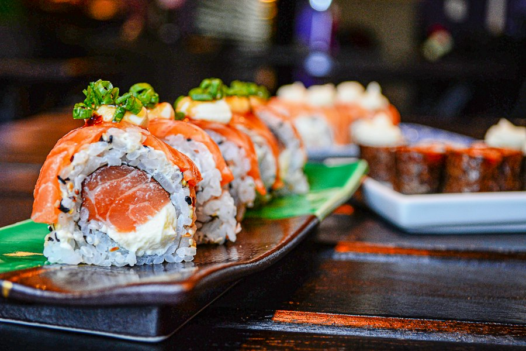
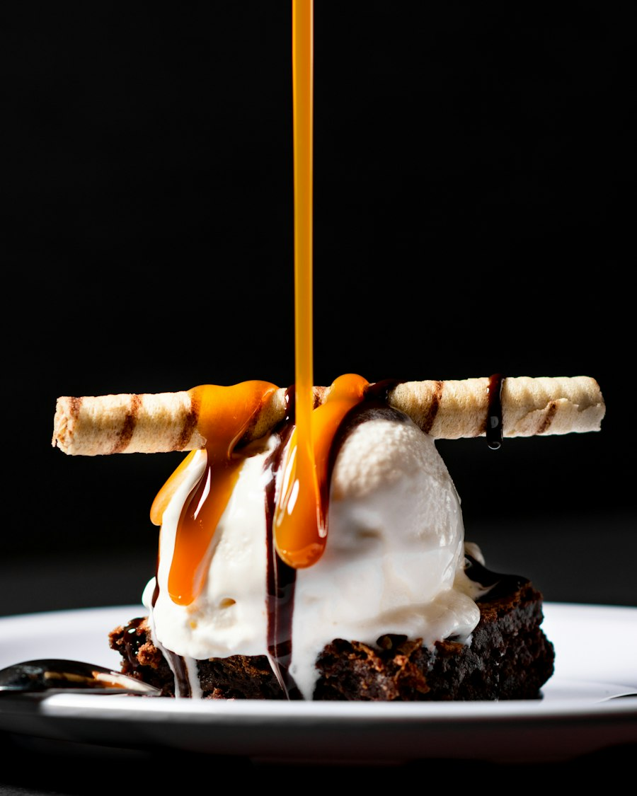

Day 1｜抵達東京
東京車站・銀座成田機場 → 飯店
搭乘示意交通工具進市區，先寄放行李、稍作休息。
交通：成田特快 N’EX → JR 東京站，再步行至飯店
東京車站
欣賞紅磚車站外觀，順便熟悉周邊街區。
交通：JR 線或步行
銀平 KITTE 丸之內店
品嚐和歌山風魚料理、刺身與海鮮御膳，作為第一頓東京晚餐。
交通：東京 Metro 丸之內線，東京站下車後步行約 1 分鐘
TRAVEL PLAN · 8 DAYS / 7 NIGHTS
示意行程｜店名與時間之後可再替換成實際安排
Day 1 抵達東京・東京車站・銀座
Day 2 淺草寺・晴空塔・下町散步
Day 3 上野公園・阿美橫町・秋葉原
Day 4 明治神宮・原宿・澀谷
Day 5 築地市場・濱離宮・銀座
Day 6 吉祥寺・井之頭公園・中目黑
Day 7 台場・teamLab・東京灣夜景
Day 8 最後採買・前往機場
集合地點 松山機場
以下為成人每人日圓估算；實際價格依日期、套餐與現場消費為準。
淺草寺、明治神宮、上野公園、原宿、銀座、台場海濱公園等主要區域可免費參觀。
11 餐合計：先抓約 ¥26,500～50,000／人
建議使用 Suica／PASMO；東京 Metro 的 IC 卡依距離以 1 日圓單位計費，市區移動以電車、地鐵與 JR 為主，公車只作備用接駁。
全程交通：先抓約 ¥9,400～13,800／人
市區以地鐵／JR／私鐵為主；台場搭百合海鷗線，晴空塔搭東武線。Tokyo Subway Ticket 24／48／72 小時票約 ¥1,000／1,500／2,000，只有每天多次搭乘且路線集中在 Metro／都營地鐵時才比較划算。
提醒：餐廳營業時間、休店日與預約規則，出發前再確認一次。
成田機場 → 飯店
搭乘示意交通工具進市區，先寄放行李、稍作休息。
交通：成田特快 N’EX → JR 東京站，再步行至飯店
東京車站
欣賞紅磚車站外觀，順便熟悉周邊街區。
交通：JR 線或步行
銀平 KITTE 丸之內店
品嚐和歌山風魚料理、刺身與海鮮御膳，作為第一頓東京晚餐。
交通：東京 Metro 丸之內線，東京站下車後步行約 1 分鐘
淺草寺・雷門
逛仲見世通與淺草寺，感受東京經典下町風景。
交通：東京 Metro 銀座線至淺草站，再步行
淺草むぎとろ 本店
品嚐創業於昭和 4 年的名物麥飯山藥（むぎとろ），感受老字號和食。
交通：從淺草寺步行，或淺草站 1–5 分鐘步行
東京晴空塔
登塔看城市全景，晴天可遠眺富士山方向。
交通：東武晴空塔線，東京晴空塔站下車
すしざんまい 東京スカイツリータウン・ソラマチ店
用江戶前壽司與新鮮海鮮收尾，吃完還能繼續逛晴空塔城。
交通：從東京晴空塔步行

淺草うなな國產鰻魚燒飯糰｜適合邊走邊吃｜約 ¥500～（圖片為料理示意）上野公園
在公園散步，依體力選擇美術館或博物館。
交通：JR 山手線至上野站，再步行
上野 すしざんまい 上野店
在阿美橫町附近享用平價壽司與鮪魚料理，適合中午快速用餐。
交通：從上野公園步行至上野站周邊
秋葉原電器街
探索電玩、動漫與特色店舖，逛街時間彈性安排。
交通：JR 山手線，上野站至秋葉原站
麵屋武藏 武仁
以濃厚湯頭與招牌大塊「武仁肉」拉麵，體驗秋葉原的人氣麵食。
交通：JR 秋葉原站昭和通口步行約 3 分鐘
明治神宮
穿過林蔭參道，參拜並享受市中心難得的安靜。
交通：JR 山手線至原宿站，再步行
原宿竹下通
逛年輕人流行小店，買些輕巧又好帶的點心。
交通：從明治神宮步行
まい泉 青山本店
在老字號日式炸豬排店享用酥脆豬排與定食，位置靠近表參道。
交通：從表參道站步行約 5–8 分鐘
澀谷十字路口・SHIBUYA SKY
從高處看澀谷街景，再到十字路口感受人潮。
交通：東京 Metro 半藏門線，表參道站至澀谷站

Rainbow Pancake人氣鬆餅｜適合坐下來休息｜約 ¥1,500～（圖片為甜點示意）築地場外市場
早起吃海鮮丼與玉子燒，逛逛市場小店。
交通：東京 Metro 日比谷線至築地站，再步行
濱離宮恩賜庭園
在庭園與池畔散步，讓行程稍微放慢。
交通：都營大江戶線，築地市場站至汐留站，再步行
すしざんまい 本店
到築地老字號壽司店品嚐鮪魚與江戶前壽司，再前往銀座購物。
交通：東京 Metro 日比谷線至築地站，再步行約 3 分鐘
鳥ぎん 銀座本店
品嚐備長炭燒鳥與現點現炊的釜飯，感受銀座老店的傳統味道。
交通：從歌舞伎座步行，或銀座站 A5 出口步行
井之頭公園
沿著湖畔散步，享受吉祥寺舒服的生活氣氛。
交通：JR 中央線至吉祥寺站，再步行
ホープ軒本舗 吉祥寺店
吃一碗從昭和屋台風格延續下來的東京豚骨醬油中華拉麵。
交通：從井之頭公園步行至吉祥寺站北口
中目黑・代官山
沿目黑川散步，看選物店與特色咖啡店。
交通：JR 山手線至惠比壽站，再步行或轉東急東橫線
たつや 駅前店
在惠比壽老牌居酒屋吃炭火燒鳥、串燒，感受上班族下班後的熱鬧氣氛。
交通：JR 惠比壽站東口步行約 2 分鐘
台場海濱公園
看彩虹大橋與東京灣景色，海邊慢慢拍照。
交通：百合海鷗線至台場海濱公園站
権八 お台場
在東京灣景觀座位享用手打蕎麥麵、串燒與天婦羅，適合旅程最後一天。
交通：百合海鷗線台場站步行約 2 分鐘，Aqua City 4F
teamLab Borderless：示意
安排沉浸式展覽體驗，預留充足參觀時間。
交通：百合海鷗線至青海站，再步行
東京灣夜景
找個看得到夜景的位置，享受旅程最後一晚。
交通：百合海鷗線至台場站，再步行
飯店周邊早餐
悠閒吃早餐、整理行李，確認護照與戰利品。
交通：步行
東京車站伴手禮
採買東京香蕉或車站限定商品，留作旅程紀念。
交通：JR 線或東京 Metro 至東京站
前往成田機場
預留交通與報到時間，平安踏上回家的路。
交通：成田特快 N’EX 或機場巴士
晴時多雲，約 18–24°C
護照、充電器、薄外套、舒適鞋子
每日 09:00，飯店大廳集合